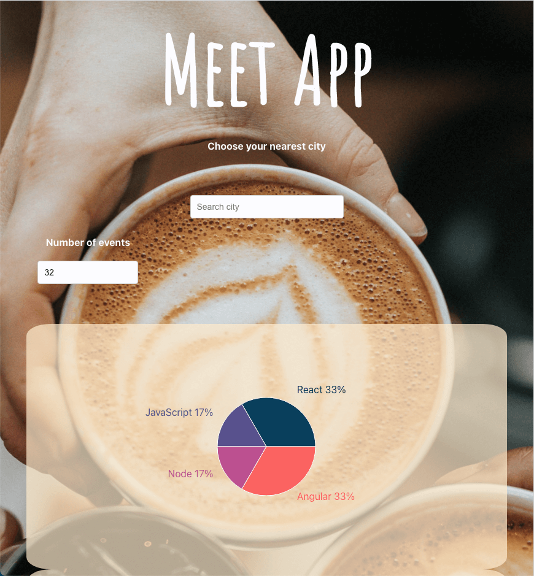

Progressive Web App
Meet app is my first Progressive Web app with React and serverless(AWS)
To build a serverless, progressive web application (PWA) with React using a test-driven development (TDD) technique. The application uses the Google Calendar API to fetch upcoming events. This is my career foundry project.
Example of features

Especially on this project, I focused on getting to know what test-driven development and behavior-driven development were. (TDD and BDD)
First of all, I followed the five steps of TDD. When an error occurs, I follow those steps to fix them instead of using console.log or another way of debugging.
Second of all, to be accustomed to BDD I deconstructed user story to Given-When-Then parts, wrote them down and then put as a test to make what I needed to code clear.
In the beginning, it took time to absorb, but these methods of strictly following what I was taught worked very well to solidify my skills and helped me through this project a lot.
In the beginning, it was a big challenge with all information about tests and React, and serverless. Overall, it went well with tests and it was better to spot and fix errors although I struggled at the beginning. When I feel a skill gap, I search google to solve the problem and watch youtube to see how other developers explains it. I believe I grew up much more than before and became more confident with React and I would love to keep creating projects with React and create progressive web apps.
1 month and 5 days
Fullstack developer